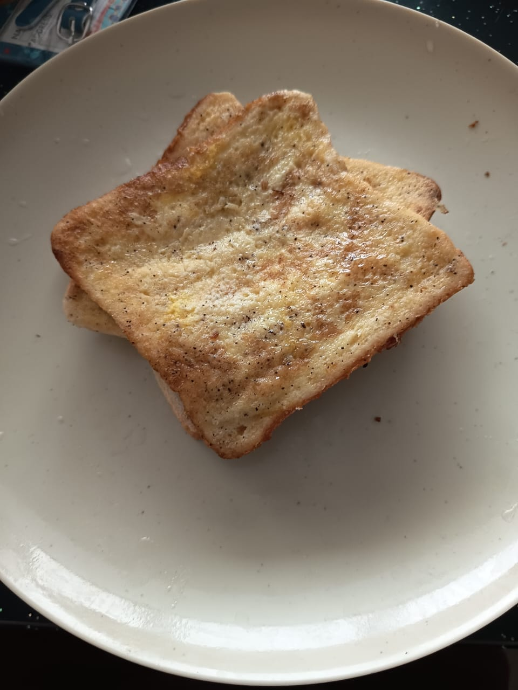

Egg toast

Description
Yes, this is an egg toast too and people eat these. It's a 5 minuite quick meal and could serve
as a qucik snack or breakfast. Do not judge.
Ingredients
- bread ~ 2 slices
- Egg ~ 1
- Powdered pepper ~ according to taste
- Salt ~ according to taste
- Cooking oil ~ 2 tsp
Steps
- Crack the egg and put it in a flat container and beat well.
- Add salt and pepper to suit your taste.
- Add about 2 tsp of cooking oil to a pan and start cooking in low heat.(be frugal with oil as to
avoid a pre-emptive strike, strongly, otherwise egg toasts might end up too oily.)
- Give bread slices a quick soak on the egg mix on one side and fry the soaked side on the pan. Both sides of the 2 slices could
be soaked and fried if done carefully.
- Enjoy!
Menu